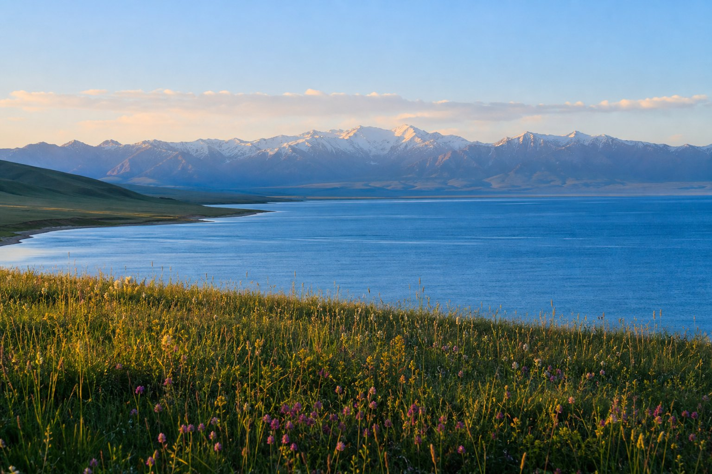
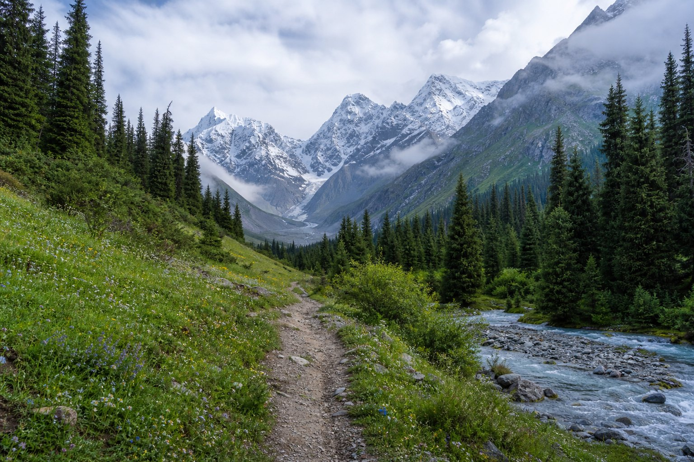
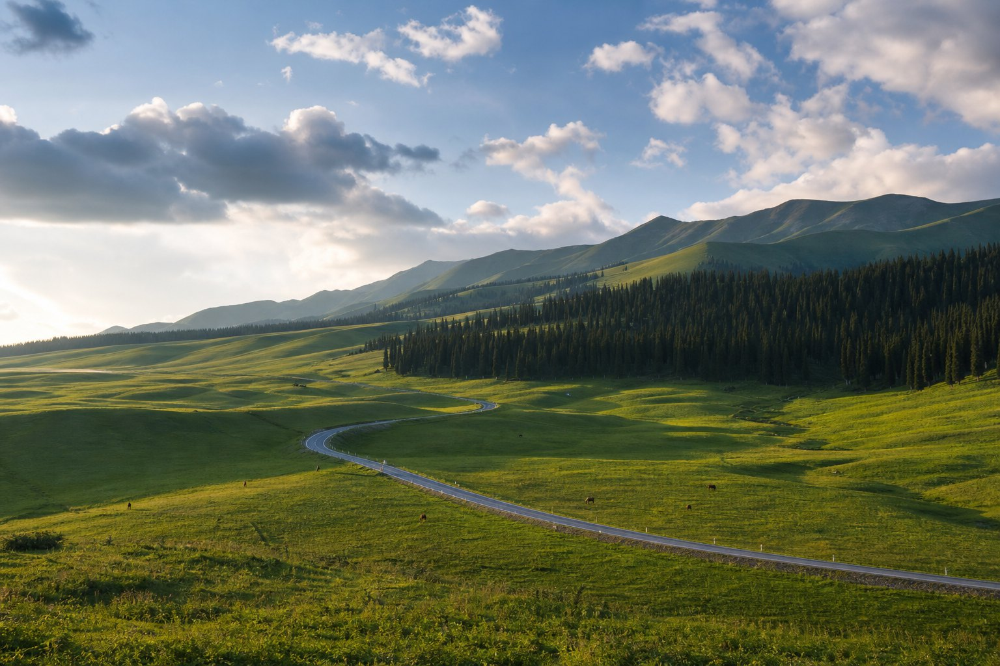

山地麦田
2026.08.06—08.15 · 10 DAYS
新疆伊犁独库公路
8 月 10 日下午已经结束夏塔行程。11 日走伊宁薰衣草庄园与霍尔果斯，12 日游赛里木湖后向东返回乌鲁木齐。
01
实际进度8/10 下午 · 已完成夏塔
02
行程日期8 月 6–15 日 · 10 天
03
后续方向霍尔果斯 · 赛里木湖 · 乌鲁木齐
THE ROUTE
一条线，读懂伊犁的层次
8 月 6—10 日的实际路线已经固定到夏塔。11 日由昭苏方向转往伊宁、霍城和霍尔果斯，12 日经赛里木湖开始东返，13 日回到乌鲁木齐；14 日只保留不影响晚班飞机的近线沙漠备选。
8 月 6–15 日 · 10 DAYS · 状态按日期自动更新乌鲁木齐 → 独库北段 → 伊犁西线 → 赛里木湖 → 乌鲁木齐截至 8 月 10 日下午已完成夏塔段；11 日转向薰衣草庄园和霍尔果斯，12 日游赛里木湖后开始返回乌鲁木齐。8 月 6 日 · 周四下午 · 向东转场乌鲁木齐 → 奇台抵达后直接前往奇台，晚上在县城休息，为次日上午江布拉克留出时间。8 月 7 日 · 上午江布拉克 · 超长转场奇台 → 江布拉克 → 独山子上午游览江布拉克后向西抵达独山子，为次日从北向南穿越独库北段做准备。8 月 8 日 · 实际行程 · 独库反向穿越独山子 → 乔尔玛 / 唐布拉 → 那拉提今天已从独山子沿独库北段向南抵达那拉提，原计划从此整体反向重排。8 月 9 日 · 实际行程 · 住宿特克斯那拉提 → 特克斯已结束那拉提段并向西抵达特克斯，9 日晚住特克斯；后续不再进入琼库什台和喀拉峻。8 月 10 日 · 实际行程 · 下午结束夏塔特克斯 → 昭苏 → 夏塔实际行程已在 10 日下午完成夏塔段，后续不再为夏塔预留机动日。8 月 11 日 · 伊犁西线 · 花田与口岸夏塔 / 昭苏 → 伊宁 → 薰衣草庄园 → 霍尔果斯先向伊宁方向回到河谷，再到霍城薰衣草庄园，下午前往霍尔果斯口岸；建议住霍尔果斯或清水河。8 月 12 日 · 高山湖 → 高速东行霍尔果斯 / 清水河 → 赛里木湖 → 奎屯上午进入赛里木湖，控制游览节奏；午后沿连霍高速向东，晚上住奎屯或独山子。8 月 13 日 · 返回乌鲁木齐奎屯 / 独山子 → 乌鲁木齐沿高速返回乌鲁木齐，下午完成车辆与行李整理，为两批航班和沙漠备选留出缓冲。8 月 14 日 · 周五 · 沙漠备选 / 晚班离疆乌鲁木齐 → 古尔班通古特沙漠南缘 → 乌鲁木齐机场只安排乌鲁木齐北侧近线沙漠半日版；周五晚航班组最晚下午返回市区取行李并前往机场。8 月 15 日 · 周六清晨 · 全程收官乌鲁木齐 → 机场周六早班组前一晚住机场附近，清晨按航司要求提前抵达；当天不再安排任何景点。
点击切换当天轨迹
- 01乌鲁木齐
- 02奇台
- 03江布拉克
- 04独山子
- 05乔尔玛 · 唐布拉
- 06那拉提
- 07特克斯
- 08昭苏
- 09夏塔
- 10伊宁
- 11薰衣草庄园
- 12霍尔果斯
- 13赛里木湖
- 14奎屯
- 15乌鲁木齐
- 16古尔班通古特沙漠南缘
边界数据：geoBoundaries · CHN ADM1路线节点按目的地经纬度近似定位，连线表示行程顺序，并非导航道路。
高山湖泊
赛里木湖
雪山草原
昭苏 · 夏塔
花田国门
霍城 · 霍尔果斯
英雄公路
乔尔玛 · 独山子
SCENES ALONG THE WAY
把三段风景，先放进行程里
以下为根据目的地景观生成的行程意境图，并非现场实时照片；用于帮助理解每天的风景层次与准备重点。

赛里木湖 · 返程前的高山蓝
从霍尔果斯方向游湖后继续东行，当晚住奎屯或独山子，不在湖边等待日落。

夏塔 · 已结束的雪山段
10 日下午已完成夏塔行程，后半程从雪山转向花田、国门与高山湖。

那拉提 · 去往特克斯的草原尾声
结束那拉提段后已向西抵达特克斯，8 月 9 日晚住宿也已落实。
DAY BY DAY
按真实日期，自动跟进行程
8 月 6—10 日的实际轨迹已经固定，并在 10 日下午完成夏塔。页面按北京时间自动把过去日期标为“已完成”、当天标为“今日行程”；后续重点依次为霍城与霍尔果斯、赛里木湖和返回乌鲁木齐。
5 / 10 DAYS今天 · 8 月 11 日 · 夏塔 / 昭苏 → 伊宁 → 薰衣草庄园 → 霍尔果斯今日：夏塔 / 昭苏 → 伊宁 → 薰衣草庄园 → 霍尔果斯
DAY 0✓ 已完成
00周四下午向东转场
乌鲁木齐 → 奇台
抵达乌鲁木齐后直接前往奇台，晚上住奇台县城，把周五上午完整留给江布拉克。
沿途重点
- 机场或集合点完成两车会合
- 沿高速向东前往奇台
- 抵达后晚餐、补水并尽早休息
风味奇台过油肉拌面、黄面、架子肉
不再安排乌鲁木齐市内景点，以顺利抵达奇台为当天目标。
DAY 1✓ 已完成
01麦田之后，转向独库北端
江布拉克 → 独山子
上午游江布拉克后向西抵达独山子，为次日从北向南走独库北段做准备。
沿途重点
- 江布拉克：天山麦海、天山怪坡
- 按约定时间离园并完成油电补给
- 长途向西前往独山子
- 抵达后尽早休息并确认独库路况
风味大盘鸡、烤羊肉、拌面
当天转场距离长，以安全到达独山子为目标，不追加夜间活动。
DAY 2✓ 已完成
02反向穿越独库北段
独山子 → 那拉提
实际由独山子经乔尔玛、唐布拉抵达那拉提，从今天起将后半程改为反向游览伊犁。
沿途重点
- 独山子大峡谷方向
- 哈希勒根达坂与防雪长廊
- 乔尔玛 / 唐布拉
- 那拉提入住
8 日晚检查轮胎、刹车与油量，独库长途之后不安排夜间活动。
DAY 3✓ 已完成
03实际行程，8 月 9 日住特克斯
那拉提 → 特克斯
8 月 9 日结束那拉提段并向西抵达特克斯，两车当晚入住特克斯，后续不再前往原计划的两个景区。
沿途重点
- 那拉提草原与河谷
- 向西抵达特克斯
- 入住、补水并整理两车物品
本段已经完成；从 10 日起页面按实际轨迹继续记录，不再保留已经取消的景区安排。
DAY 4✓ 已完成
04实际行程，下午已结束夏塔段
特克斯 → 昭苏 → 夏塔
实际从特克斯进入昭苏方向，并在 10 日下午完成夏塔游览；后续不再为夏塔预留机动日。
沿途重点
- 特克斯出发
- 昭苏方向转场
- 夏塔景区与雪山河谷
- 下午结束游览
以实际完成情况为准；页面会在日期进入次日后自动将本卡标为“已完成”。
DAY 5● 今日行程
05从雪山转向花田与国门
夏塔 / 昭苏 → 伊宁 → 薰衣草庄园 → 霍尔果斯
上午向伊宁方向回到河谷，午后游览霍城薰衣草庄园，再前往霍尔果斯口岸；晚上住霍尔果斯或清水河。
沿途重点
- 伊宁方向午餐与补给
- 解忧公主薰衣草园
- 霍尔果斯国门景区
- 霍尔果斯 / 清水河住宿
8 月已过薰衣草主花期，园区停留控制在 60—90 分钟；口岸参观带身份证，并以当日开放公告为准。
DAY 6待出发
06高山湖之后，开始向乌鲁木齐返程
霍尔果斯 / 清水河 → 赛里木湖 → 奎屯
上午游览赛里木湖，午后沿 G30 连霍高速向东，当晚住奎屯或独山子，避免把长途压到飞行日前。
沿途重点
- 果子沟与赛里木湖
- 核心湖段短停
- 精河方向补给
- 奎屯 / 独山子住宿
湖边风大且体感较低；不等待日落，确保天黑前进入熟悉的高速与城市路段。
DAY 7待出发
07提前一天回到起飞机场城市
奎屯 / 独山子 → 乌鲁木齐
沿高速返回乌鲁木齐，下午整理两车与行李，并按周五晚、周六早两批航班重新分组。
沿途重点
- G30 高速返程
- 乌鲁木齐入住
- 车辆与行李整理
- 两批航班订单复核
当天不追加远途景点；能否去沙漠只在确认顺利回城后决定。
DAY 8待出发
08可选半日沙漠，晚班组优先离疆
乌鲁木齐近线沙漠 → 周五晚航班
若车辆、天气和航班时间都允许，上午走五家渠 / 222 团方向的古尔班通古特沙漠南缘，午后返回乌鲁木齐。
沿途重点
- 近线沙漠南缘正规开放点
- 午后回城取行李
- A 组：周五晚航班
- B 组：住机场附近
若朋友推荐的是鄯善库木塔格，不安排在飞行日：单程接近 3 小时且预报约 40°C。任何延误都直接取消沙漠。
DAY 9待出发
09周六早航班，全程收官
乌鲁木齐 → 机场
B 组从机场附近酒店直接前往航站楼，当天不再安排任何景点。
沿途重点
- 证件和托运行李前一晚确认
- 按订单提前抵达对应航站楼
- 落地后群内报平安
航班时间、航站楼和托运截止时间以订单及航司通知为准。
WEATHER WATCH · 8/10—8/15
沿着行程，看气温与天气风险
预报已按“11 日霍尔果斯、12 日赛里木湖、13 日返乌、14—15 日分批飞行”重新对齐。山区和湖区体感会比城市预报更凉，出发前仍要再次核对官方预警。
本次行程重点
11 日花田与口岸，12 日赛湖后开始东返
8/11—15夏塔 → 霍尔果斯 → 赛里木湖 → 乌鲁木齐11 日长转场，薰衣草园不要久留
8 月主花期已过，控制在 60—90 分钟；霍尔果斯口岸带身份证，并以当天开放公告为准。
12 日赛里木湖防风降温，午后准时东行
外套放在随手可取的位置，不等日落；若环湖耗时超出计划，就缩短停靠并直接前往奎屯。
周五晚与周六早两批，都从乌鲁木齐离疆
13 日先回到乌鲁木齐；14 日沙漠只是可取消备选，两批都按订单至少提前两小时到航站楼。
昭苏 · 夏塔
实际完成
—/ —
截至 10 日下午，夏塔段已经完成。后续天气卡只围绕霍尔果斯、赛里木湖、返乌鲁木齐与航班日。
查看官方预报 ↗伊宁 · 霍城 · 霍尔果斯
小雨转多云
33°/ 20°C
伊宁预报小雨，霍尔果斯为小雨转多云。带轻便雨具；薰衣草主花期已过，重点看园区景观与香草产品，不把花量当作硬目标。
查看官方预报 ↗赛里木湖 · 博乐参考
多云
35°/ 21°C
博乐城市预报为多云，湖区海拔更高、体感明显更凉。防风外套放在车内易取位置，午后按时离湖向奎屯推进。
查看官方预报 ↗奎屯 → 乌鲁木齐
阴 / 多云
36°/ 22°C
奎屯约 36/23°C，乌鲁木齐约 31/22°C。白天仍热，沿高速每两小时休息，下午回城后不再安排长距离景点。
查看官方预报 ↗乌鲁木齐 · 近线沙漠
多云
32°/ 22°C
乌鲁木齐多云；若去古尔班通古特沙漠南缘，仍按高温强晒准备。周五晚航班组只做半日近线，并设置硬性返城时间。
查看官方预报 ↗乌鲁木齐机场
阴
31°/ 22°C
周六早航班组前一晚住机场附近，清晨直接出发；证件与托运行李在 14 日晚全部整理完。
查看官方预报 ↗OFFICIAL ALERTS · 官方生效预警
预报风险不等同于已经发布的预警此处为 2026 年 8 月 11 日按新路线查询的预报快照。山区天气变化快，请在每天出发前用官方页面再次核对生效预警；越靠后的趋势预报不确定性越高。
打开新疆官方预警页 ↗FLIGHT PLAN · 8/14—8/15 · URUMQI
周五晚、周六早，分两批从乌鲁木齐离疆
本页不猜测具体航班号，以你们已经确认的订单为准。13 日全员先回到乌鲁木齐；14 日白天的沙漠备选不能挤占值机、托运和市区到机场的缓冲。
HARD DEADLINE · 航班优先
周五晚先走 / 周六早收官
A 组按周五晚订单倒推最晚返城时间；B 组14 日晚住机场附近，第二天清晨不再安排任何景点。
8 月 14 日 · 周五晚上
A 组 · 乌鲁木齐机场
沙漠备选只能安排近线半日版。按订单起飞时间倒推：至少提前 2 小时到航站楼，再预留市区至机场和取行李时间。FRI NIGHT周五晚航班
抵达对应航站楼 · 以订单为准
8 月 15 日 · 周六早上
B 组 · 乌鲁木齐机场
14 日晚上住机场附近并提前整理托运行李。清晨直接去机场，不再安排早餐以外的绕行或景点。SAT AM周六早航班
清晨按订单时刻出发
请以各自订单里的起飞时间、航班号、航站楼和托运截止时间为准；如航班动态变化，沙漠备选最先取消。
BEFORE YOU GO
出发前，把安全装进行李
新疆自驾的距离长、温差大、部分路段补给稀疏。下面这份清单建议在出发前一晚和每天发车前各检查一次。
DAILY CHECK · 每天发车前
四件小事，决定一天是否从容
- 01看天气山区降雨与温度
- 02看路况封路与景区公告
- 03补油电不等见底再补给
- 04定集合停车点与失联方案
FOR THIS TRIP · 8/6—8/15
按我们的行程准备
不是泛用清单，而是把每个关键日期、路段和要提前做的事放在一起。出发前可以按时间顺序逐项划掉。
DAY 0—4 · 已完成
乌鲁木齐 → 奇台 → 独库 → 那拉提 → 特克斯 → 夏塔
实际轨迹已固定到 10 日下午，夏塔段已经结束- 已完成江布拉克、独库北段、那拉提和特克斯段
- 10 日由特克斯经昭苏到夏塔，下午结束游览
- 从 11 日起不再回头，把剩余时间留给伊犁西线和返程
DAY 5
夏塔 / 昭苏 → 伊宁 → 解忧公主薰衣草园 → 霍尔果斯
长转场里只保留花田与国门两个重点- 上午尽早离开昭苏方向，午后先到霍城薰衣草园
- 8 月主花期已过，控制停留约 60—90 分钟
- 随后前往霍尔果斯国门景区；住霍尔果斯或清水河，方便次日赛湖
DAY 6
霍尔果斯 / 清水河 → 赛里木湖 → 奎屯
赛湖之后必须继续东行，避免把返乌压力留到飞行日前- 上午进入赛里木湖，外套与防风层随手可取
- 游览控制在核心湖段，不等待日落
- 下午沿 G30 向东，晚上住奎屯或独山子
DAY 7
奎屯 / 独山子 → 乌鲁木齐
先确保全员回到起飞机场城市，再决定是否加沙漠- 沿高速返回乌鲁木齐，途中按约两小时节奏休息
- 下午完成车辆、行李与两批航班分组
- 晚上按周五晚班与周六早班分别确认航站楼、接送和住宿
DAY 8
乌鲁木齐 → 古尔班通古特沙漠南缘 → 乌鲁木齐
只做近线半日版；周五晚航班拥有绝对优先级- 近线优先选五家渠 / 222 团方向，不安排单程近 3 小时的库木塔格
- 全程走铺装道路和正规开放点，不擅自驶入沙地
- 按最早的周五晚航班倒推硬性返城时间，任何延误立即取消沙漠
DAY 9
乌鲁木齐酒店 → 机场
周六早班组不再安排景点，前一晚住机场附近- 14 日晚完成托运行李、证件和充电设备检查
- 按订单要求提前到达对应航站楼
- 全员落地后在群内报平安
PACKING LIST
建议带什么
按六个类别装包，出门前逐项确认。两辆车的饮水、药品、充电设备和关键地址要分开放置，不要全部集中在一辆车。
证件与预订
放在随身包，不要留在后备箱深处
- 身份证、驾驶证、行驶证
- 车辆保险信息与道路救援电话
- 酒店、门票和航班订单截图
- 少量现金与一张备用银行卡
分层衣物
山口与清晨可能比城市低十几度
- 速干短袖和长裤
- 抓绒或薄羽绒、冲锋衣
- 防滑运动鞋或徒步鞋
- 雨衣、备用袜和替换内衣
防晒与防护
高海拔紫外线强，阴天也需要防晒
- SPF 50+ 防晒霜和润唇膏
- 太阳镜、宽檐帽、防晒面罩
- 保湿用品和驱蚊用品
- 折叠伞或轻便雨披
健康药品
处方药按完整行程再多备两天
- 个人常用药与处方药
- 肠胃、感冒、止痛、晕车药
- 创可贴、碘伏棉签、纱布
- 电解质冲剂和葡萄糖
两车协同
关键物品分开放，避免都集中在同一辆车
- 两车各备饮水、常用药和充电设备
- 对讲机或群聊实时位置共享
- 纸质住宿地址和紧急联系人
- 每天约定集合点与最晚等待时间
电子与补给
无人区和山谷可能信号不稳定
- 车载充电器、充电宝、数据线
- 提前下载新疆离线地图
- 手电或头灯、保温杯
- 饮用水、能量食品和水果
ON THE ROAD
路上注意什么
遇到天气、封路、身体不适或车辆报警时，优先保证人和车安全，行程随时可以缩短。
每天确认路况
出发前查看交管和景区公告。伊昭公路、独库公路遇降雨、落石或临时管制时，不要绕过路障。
拒绝疲劳夜驾
连续驾驶约两小时就休息。山路不抢行、不压弯、不在盲弯停车拍照，天黑前尽量抵达住宿地。
油量过半就补
偏远路段加油站间距较大。燃油车尽量保留 100–150 公里续航，新能源车不要把单一充电站当作唯一方案。
留意高海拔反应
到达山口后慢走、多补水、少饮酒。若持续头痛、恶心、胸闷或呼吸困难，应停止活动并尽快下降海拔。
两车不追赶
前车错过路口时，后车按导航安全行驶，不急刹、不倒车、不强行追赶；到约定的安全停车点再重新会合。
尊重草原与村落
不驶离硬化道路碾压草场，不追逐牲畜，不遗留垃圾；无人机飞行前先确认当地、景区和空域要求。
PLAN B
反向行程需要压缩时
先保住宿与返程，再保核心景点
- 11 日若到霍城已晚，缩短薰衣草园停留；口岸停止入园就直接入住，不安排夜间追赶
- 12 日若赛里木湖天气恶化，缩短游湖并沿 G30 东行；14 日任何延误都直接取消沙漠
应急电话110 报警 · 120 急救 · 122 交通事故
发生险情先撤到安全位置，开启双闪并摆放三角警示牌，再联系救援。
安全信息参考：中国政府网常用应急号码·CDC 高海拔旅行提示
没有任何一个景点值得冒险赶路。
少赶一个景点，多留一小时给天气和自己。